1School of Computer Science, Nanjing University of Information Science and Technology, Nanjing, China
Machine Learning (Fall 2026) — Course Project Report | Code and data: https://github.com/kaixinguaika/mall-customer-segmentation
Retail competition has moved online, and a physical mall can no longer rely on footfall alone. A customer who walks in already carries a great deal of information — age, gender, purchasing power, the way she spends when she is inside the building — but this information is typically aggregated into a single revenue number. Marketing budgets are then spread evenly across a population whose members behave in fundamentally different ways. Customer segmentation, one of the oldest ideas in marketing analytics and one of the most robust applications of data mining, replaces this homogenising view with a small number of interpretable groups that can be addressed separately (Wedel & Kamakura, 2000).
The task is a data mining task rather than a prediction task. We are not given labels; the structure of the customer population has to be discovered, validated, and then translated into action. This report follows that pipeline end to end on a compact, well-known retail dataset: we explore the data, build an unsupervised model, argue for a particular number of clusters using several independent criteria, check that the solution is not an artefact of one algorithm or one random seed, profile the resulting groups, and finally train a classifier that can assign unseen customers to the discovered groups at negligible cost.
Our contributions are the following. (i) A reproducible exploratory analysis that establishes why the income–spending plane is the natural feature space for this problem and why gender, despite being the most salient demographic attribute, carries no segment-level signal. (ii) A clustering model whose complexity is chosen by four criteria and validated by 30 bootstrap resamples and four alternative algorithms, with an explicit explanation of why DBSCAN is the wrong tool here. (iii) A business-readable profile of five segments with concrete targeting recommendations. (iv) A supervised classifier that operationalises the segmentation, together with a careful discussion of the label-leakage effect that inflates its accuracy and a demographic-only baseline that exposes the honest limit of predictive assignment.
Segmentation has a long history in marketing science. Early work relied on a priori schemes such as demographics or geography; the field then moved towards post hoc approaches in which groups emerge from the data. The RFM framework — recency, frequency, monetary value — remains the most widely used operational scheme in retail (Hughes, 1994), and clustering of RFM variables is still a standard industry recipe. Punj and Stewart (1983) reviewed the cluster-analytic literature in marketing and already warned about the two decisions that dominate the outcome: the choice of variables and the choice of k. Dolnicar (2002) showed that these two decisions are frequently made without justification, which is precisely the weakness this report tries to avoid.
On the algorithmic side, K-Means (MacQueen, 1967; Hartigan & Wong, 1979) remains the default choice for large-scale segmentation because it is fast, deterministic given a seed, and produces spherical groups that are easy to describe to non-specialists. Its main limitation — the number of clusters must be supplied — is addressed by internal validity indices: the silhouette coefficient (Rousseeuw, 1987), the Davies–Bouldin index (Davies & Bouldin, 1979) and the Calinski–Harabasz index. Because internal indices can disagree, the standard recommendation is to combine them with a stability analysis, following the resampling logic of Ben-Hur et al. (2002). Alternative partitional schemes include Ward's hierarchical criterion (Ward, 1963), Gaussian mixtures with full covariance, and density-based clustering (Ester et al., 1996), which makes no assumption on cluster shape but requires the groups to be separated by low-density regions.
Once a segmentation exists, it is often desirable to assign new customers without re-clustering. This is a supervised learning problem; support vector machines (Cortes & Vapnik, 1995) and random forests (Breiman, 2001) are the usual workhorses, and both are available in scikit-learn (Pedregosa et al., 2011), the library used throughout this project. The methodological caveat — that a classifier trained on cluster labels partly learns the clustering algorithm rather than the customer population — is well known in the semi-supervised literature but is rarely quantified in student projects; we return to it in Section 7.2.
We use the Mall Customer Segmentation Data distributed on Kaggle (Choudhary, 2019). The file contains 200 customer records with one identifier and four attributes; Table 1 summarises the schema. The dataset is small by modern standards, which is a limitation for statistical power but an advantage for interpretability: every cluster can be inspected record by record, and the whole analysis runs in under ten seconds on a laptop.
| Field | Type | Range / values | Role |
|---|---|---|---|
| CustomerID | integer | 1–200 | identifier |
| Gender | categorical | Female (112), Male (88) | descriptive |
| Age | integer | 18–70 | descriptive |
| Annual income | integer | 15–137 (k$) | clustering |
| Spending score | integer | 1–99 | clustering |
| No missing values, no duplicated rows, no duplicated identifiers, no impossible values. | |||
The data required no imputation and no outlier removal. We verified that all four attributes are within plausible ranges and that every CustomerID is unique. We deliberately kept the extreme incomes (15k$ and 137k$) because they are genuine, sparse but valid observations, and because removing them would artificially smooth exactly the structure we are trying to find. Three transformations were applied before modelling. First, CustomerID was dropped: it is a surrogate key and carries no information. Second, gender was encoded as a binary indicator for the classifier stage; it was excluded from the clustering stage, because clustering in a mixed metric space is ill-defined and because we wanted the segments to be described by spending behaviour rather than by a protected attribute. Third, the two clustering variables were standardised to zero mean and unit variance. This step is essential rather than cosmetic: income ranges over roughly 120 units while the spending score ranges over 100, and without standardisation the Euclidean distance would be dominated by whichever variable happens to have the larger variance. After standardisation both variables enter the distance with equal weight, so a one-standard-deviation difference in income counts as much as a one-standard-deviation difference in spending.
The three numeric attributes have markedly different shapes (Figure 1). Age is right-skewed with a long tail towards 70 and a pronounced mode around 30; income is bimodal, with one mode near 60k$ and a secondary bump near 80k$; the spending score is the most symmetric of the three, slightly platykurtic, and spreads over almost the entire 1–100 range. The population is 56% female and 44% male, and the two groups are close in size, so no re-weighting was necessary.
The most informative view is the joint distribution of income and spending (Figure 2). The scatter plot is not a diffuse cloud: the points organise themselves into five visually distinct blocks — a low-income–low-spending block, a low-income–high-spending block, a dense central block, an affluent low-spending band and an affluent high-spending band. This is the geometric situation in which centroid-based clustering is expected to work well, and it is the main reason why we chose K-Means as the primary model.
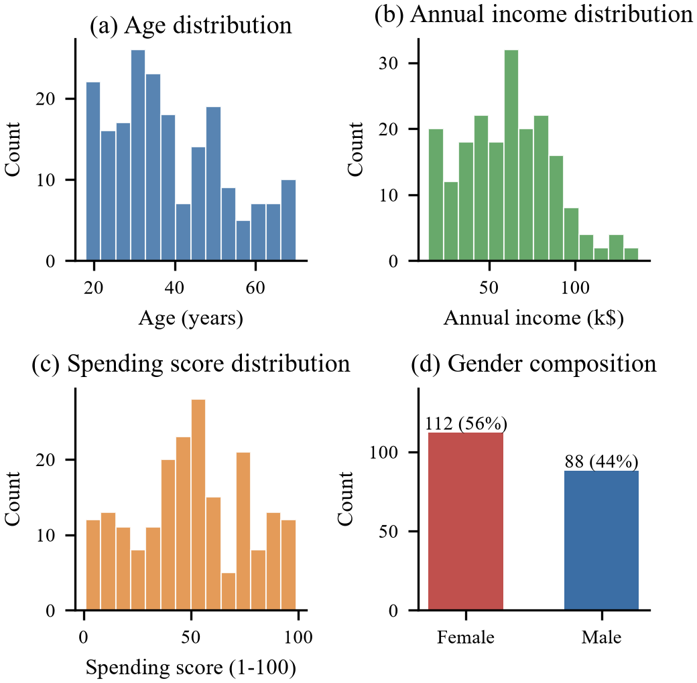
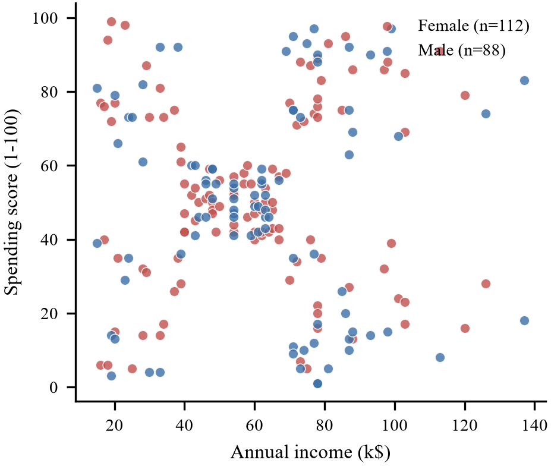
The correlation structure explains why this structure is easy to miss in a univariate or correlation-based analysis (Figure 3). Income and spending are essentially uncorrelated (r = 0.01), which is unusual in retail data and is a property of how the spending score is constructed; age is negatively correlated with spending (r = −0.33, p < 0.001), so older customers tend to spend less at any income level, and age is uncorrelated with income. The practical consequence is important: a linear model would conclude that income is useless for explaining spending, and any method that relies on variance along a principal axis would miss the structure. The information is in the joint position of a customer in the plane, not in either coordinate alone.
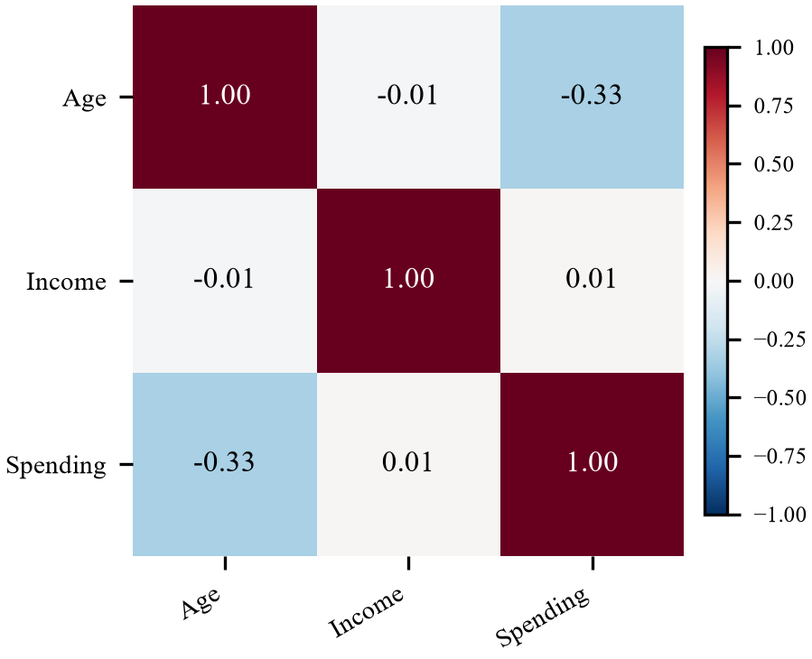
Gender, despite being the most visually salient attribute, turns out to be irrelevant at the segment level (Figure 4). Welch tests on age, income and spending give p = 0.40, 0.43 and 0.42 respectively, and the Mann–Whitney tests agree (p ≥ 0.41). Female customers spend slightly more on average (51.5 versus 48.5) but the difference is well inside sampling noise. We therefore keep gender out of the clustering and revisit it only as a classifier input, where its contribution is likewise negligible (Section 6.5).
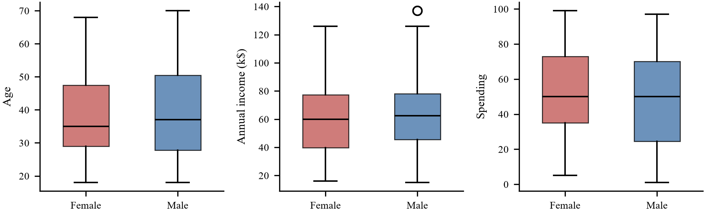
K-Means partitions the n customers into K disjoint sets by minimising the within-cluster sum of squares
J = Σk=1K Σx∈Ck ‖x − μk‖2,
where μk is the centroid of cluster Ck. We used Lloyd's algorithm with 100 random initialisations (n_init=100, random_state=42) to remove seed sensitivity. Because K is not given, we computed four quantities for K = 2,…,10: the within-cluster sum of squares (elbow), the mean silhouette coefficient, the Davies–Bouldin index (lower is better) and the Calinski–Harabasz index (higher is better). The three indices measure different things — cohesion versus separation, worst-case ratio of within- to between-cluster spread, and a variance ratio — so agreement among them is stronger evidence than any single number.
Two checks guard against a solution that is an artefact of the algorithm or of the sample. First, we re-ran K-Means on 30 bootstrap resamples of the 200 records and computed the adjusted Rand index (Hubert & Arabie, 1985) between each resampled partition and the reference partition restricted to the resampled points; a high mean ARI means the segments are reproducible from a perturbed sample. Second, we clustered the same feature space with four alternative algorithms — bisecting K-Means, Ward agglomerative clustering, a full-covariance Gaussian mixture, and DBSCAN — and compared their partitions to ours with the same index. DBSCAN requires two hyper-parameters; we set min_samples=5 and chose eps from the 90th percentile of the 5-nearest-neighbour distance curve (0.47 in standardised units), which is the standard heuristic.
After fitting, centroids were transformed back to the original units, and each cluster was described by its size, its mean and standard deviation of age, income and spending, and the share of female customers. Segments were then named by their position relative to the sample medians of income and spending. We stress that the median split is used only for labelling; it plays no role in the clustering itself, and the label would remain correct if the medians shifted slightly.
To make the segmentation usable on new customers, we treated the cluster labels as a target variable and trained six classifiers on gender, age, income and spending: logistic regression, k-nearest neighbours (k = 5), an RBF support vector machine (C = 3), a depth-4 decision tree, a 300-tree random forest and gradient boosting. Performance was estimated with 5-fold stratified cross-validation (accuracy and macro-averaged F1, since the classes are imbalanced: the largest segment holds 40.5% of the data), and the best model was additionally evaluated on a stratified 70/30 hold-out split. Because the labels are derived from two of the four inputs, this experiment is partly circular; we therefore repeated it with demographics only (gender and age) to obtain an uncontaminated estimate of how far a customer profile alone can predict segment membership.
All criteria agree on K = 5 (Table 2, Figure 5). The within-cluster sum of squares falls steeply up to five clusters and then flattens, the silhouette coefficient peaks at 0.555 for five clusters and drops to 0.540 at six, and the Davies–Bouldin index reaches its minimum at the same point. The Calinski–Harabasz index keeps increasing up to K = 9, but this index is known to favour many small spherical clusters and its increments become small after five; the silhouette, which penalises exactly that behaviour, is the more trustworthy criterion here. We therefore fix K = 5, which also matches the five visually distinct blocks of Figure 2 and the five-group solution that is usually reported for this dataset.
| K | SSE | Silhouette ↑ | Davies–Bouldin ↓ | Calinski–Harabasz ↑ |
|---|---|---|---|---|
| 2 | 269.7 | 0.321 | 1.267 | 95.7 |
| 3 | 157.7 | 0.467 | 0.717 | 151.3 |
| 4 | 108.9 | 0.494 | 0.710 | 174.6 |
| 5 | 65.6 | 0.555 | 0.572 | 248.6 |
| 6 | 55.1 | 0.540 | 0.655 | 243.1 |
| 7 | 44.9 | 0.528 | 0.715 | 254.6 |
| 8 | 37.1 | 0.457 | 0.758 | 267.9 |
| 9 | 32.4 | 0.457 | 0.754 | 271.2 |
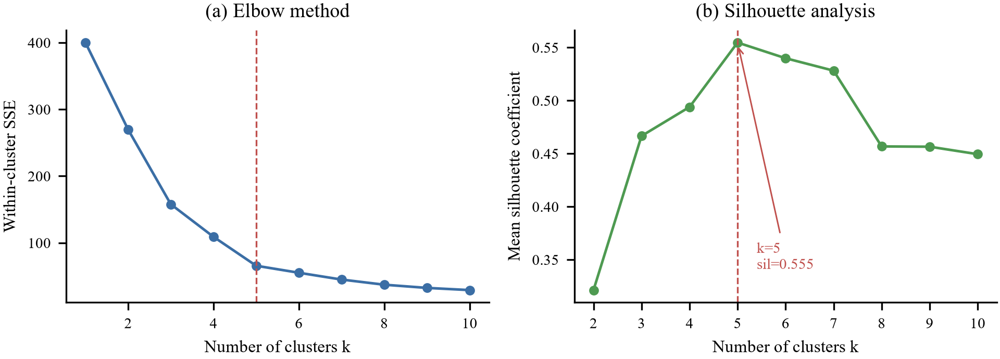
The bootstrap stability is high: the mean adjusted Rand index across 30 resamples is 0.979 (standard deviation 0.025), so a partition learned from a randomly perturbed sample is almost identical to the reference partition. Algorithmic agreement is equally reassuring (Table 3, Figure 7). Ward hierarchical clustering, which optimises a different objective (minimum-variance merging) finds a partition with ARI 0.942 and essentially the same silhouette, and the Gaussian mixture — which allows elliptical, overlapping clusters — reaches ARI 0.957. Three methods with different inductive biases converging on the same partition is much stronger evidence than any single index.
DBSCAN, by contrast, fails (ARI 0.273), and its failure is informative rather than accidental. It recovers only two clusters and flags 11 points as noise, because it defines a cluster as a connected region of high density with a single global radius. Our groups are separated by gaps of varying width — the low-income pair is tightly packed while the central group is diffuse — so no single eps can isolate all five; a smaller radius shatters the diffuse central group into noise, a larger one merges the low-income blocks. This is exactly the situation in which a partitioning method is the right tool and a density-based method is not, and it justifies the choice made in Section 5.1 on empirical rather than stylistic grounds.
| Algorithm | Clusters | Noise | Silhouette | ARI vs. K-Means |
|---|---|---|---|---|
| K-Means, K=5 (reference) | 5 | 0 | 0.555 | 1.000 |
| Gaussian mixture (full cov.) | 5 | 0 | 0.554 | 0.957 |
| Agglomerative, Ward | 5 | 0 | 0.554 | 0.942 |
| Bisecting K-Means | 5 | 0 | 0.384 | 0.659 |
| DBSCAN (eps=0.47, minPts=5) | 2 | 11 | 0.396 | 0.273 |
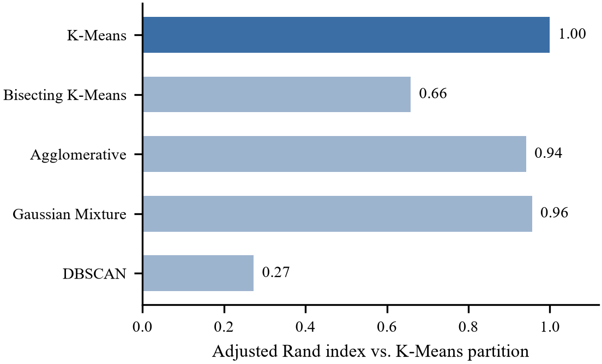
Table 4 and Figure 6 describe the final solution. The five groups are remarkably interpretable and each has a clear commercial reading.
Standard (C2, 81 customers, 40.5%) is the backbone of the customer base: middle income (55.3k$), middle spending (49.5), moderate dispersion, the widest age spread of all segments (42.7 ± 16.5) and 59% women. Its members are not a target for acquisition campaigns, they are a target for retention and basket expansion.
Target (C4, 39 customers, 19.5%) combines high income (86.5k$) with high spending (82.1) and is strikingly young (32.7 ± 3.7, the tightest age band in the data). These are the customers to protect: they generate the highest spend per visit and they are young enough to be converted into long-term loyalty members.
Conservative (C3, 35 customers, 17.5%) has the highest average income of all (88.2k$) but spends like the poorest group (17.1). This is the most valuable untapped segment: affluent customers who are not engaged, and the only group where the gender balance is male-leaning (46% women).
Impulsive (C1, 22 customers, 11.0%) is the mirror image: low income (25.7k$) but very high spending (79.4), the youngest segment (25.3 ± 5.3). These are young shoppers who spend out of proportion to their means — typically students and early-career consumers responsive to trends, promotions and instalment schemes.
Frugal (C0, 23 customers, 11.5%) is low on both axes (26.3k$, 20.9) and older (45.2), with the largest spending dispersion; this is a price-sensitive, utility-driven group.
| Segment | n | Share | Age | Annual income (k$) | Spending score | % Female | Suggested action |
|---|---|---|---|---|---|---|---|
| C0 Frugal | 23 | 11.5% | 45.2 ± 13.2 | 26.3 ± 7.9 | 20.9 ± 13.0 | 61 | value packs, coupons, essentials |
| C1 Impulsive | 22 | 11.0% | 25.3 ± 5.3 | 25.7 ± 7.6 | 79.4 ± 10.5 | 59 | trends, social media, instalments |
| C2 Standard | 81 | 40.5% | 42.7 ± 16.5 | 55.3 ± 9.0 | 49.5 ± 6.5 | 59 | retention, cross-selling |
| C3 Conservative | 35 | 17.5% | 41.1 ± 11.3 | 88.2 ± 16.4 | 17.1 ± 10.0 | 46 | reactivation, premium assortment |
| C4 Target | 39 | 19.5% | 32.7 ± 3.7 | 86.5 ± 16.3 | 82.1 ± 9.4 | 54 | loyalty tiers, early access |
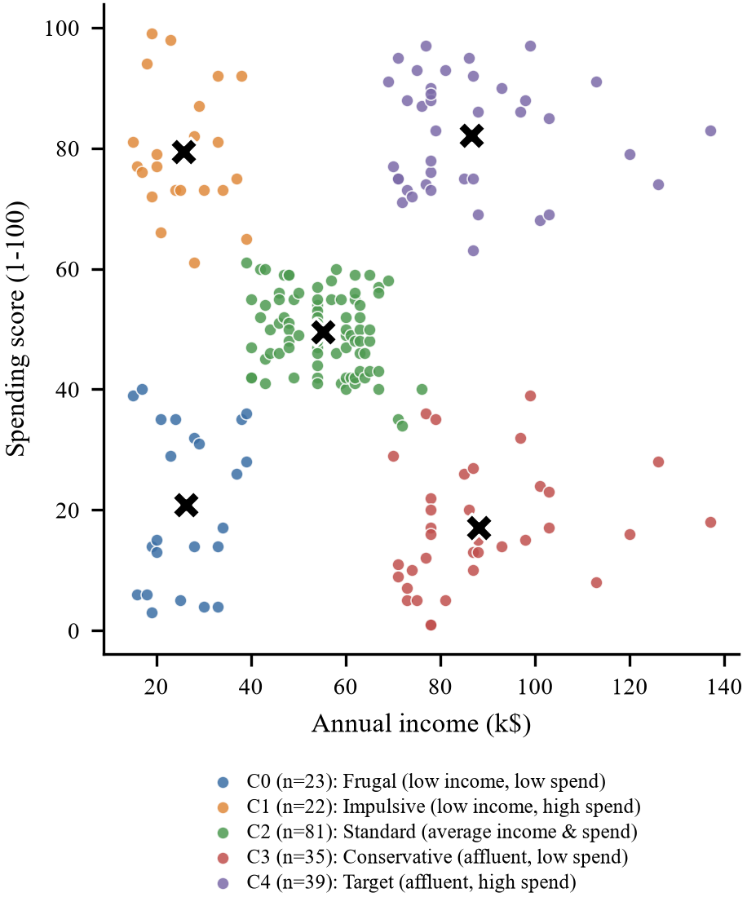
It is fair to ask whether age, the strongest correlate of spending in Section 4, should enter the feature space. We ran the same pipeline on all three standardised attributes and obtained five clusters with a silhouette of only 0.417, against 0.555 in the two-variable space. The reason is visible in Figure 8: in the three-dimensional space the two low-income groups overlap in age (25.3 versus 45.2 is a real difference in means, but the standard deviations are large), so a third dimension adds within-cluster variance faster than it adds separation. Age is therefore better used as a descriptive variable and as a classifier input than as a clustering dimension — a small illustration of Punj and Stewart's warning that variable choice dominates the outcome.
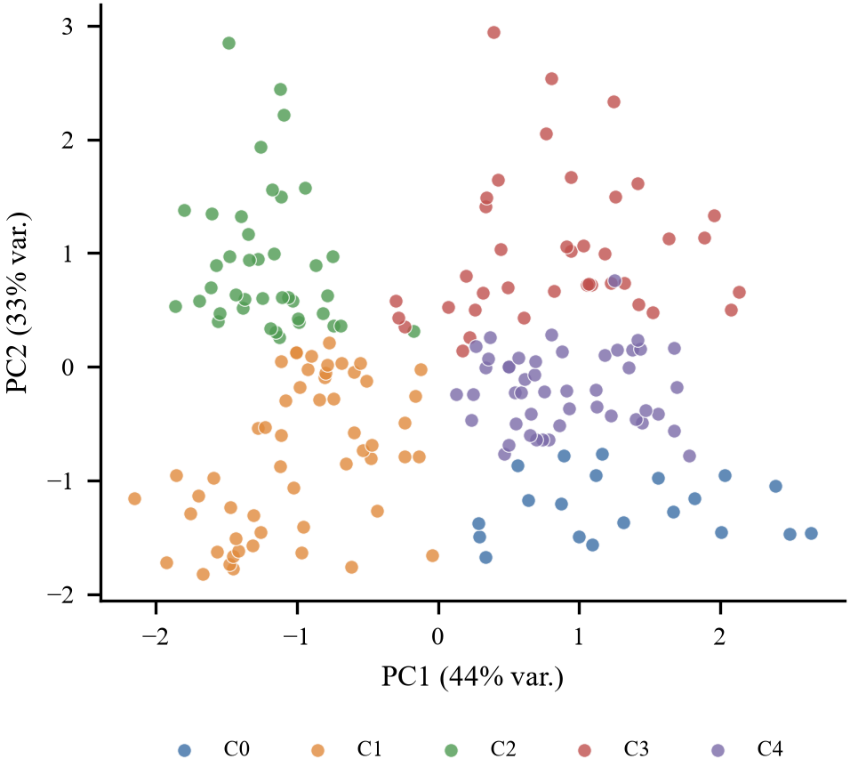
All six classifiers reproduce the segmentation well, which is unsurprising given the label provenance (Table 5, Figure 9). The RBF support vector machine is the best model, with 97.5% cross-validated accuracy and a macro F1 of 0.972; on the held-out 30% it reaches 93.3% accuracy and 0.932 macro F1, with the entire error mass concentrated on the boundary between the two low-income segments and on the frontier of the central group (Figure 10). These are exactly the regions where a customer sits far from both centroids and where the segmentation itself is uncertain, so the classifier's errors are consistent with the geometry rather than random.
Feature importance from a random forest fitted on the full data confirms the geometry: spending (0.46) and income (0.44) carry almost all the signal, age contributes 0.09 and gender 0.004 (Figure 11). The decision surface in Figure 12 is essentially a piecewise-constant reconstruction of the Voronoi cells of the five centroids, which is what one should expect from a classifier trained on K-Means labels and is the reason the model can be deployed as a cheap routing rule.
The demographic-only experiment gives the honest counterweight. Trained on gender and age alone, logistic regression reaches 37.0% accuracy and a random forest 40.0%, against a majority-class baseline of 40.5%. In other words, demographics carry no usable information about segment membership in this dataset. The high accuracy of the full model is therefore mostly circular: it recovers the K-Means decision rule, not an underlying demographic truth. That is a legitimate use of the classifier — it replaces a clustering run with a lookup — but it must not be reported as evidence that segment membership is predictable from who a customer is.
| Model | CV accuracy | CV macro F1 | Hold-out acc. |
|---|---|---|---|
| SVM (RBF) | 0.975 ± 0.027 | 0.972 | 0.933 |
| Logistic regression | 0.965 ± 0.030 | 0.962 | — |
| Random forest (300) | 0.960 ± 0.034 | 0.964 | — |
| Gradient boosting | 0.960 ± 0.020 | 0.961 | — |
| Decision tree (depth 4) | 0.950 ± 0.027 | 0.954 | — |
| k-NN (k=5) | 0.950 ± 0.022 | 0.943 | — |
| Demographics only (RF) | 0.400 | 0.309 | — |
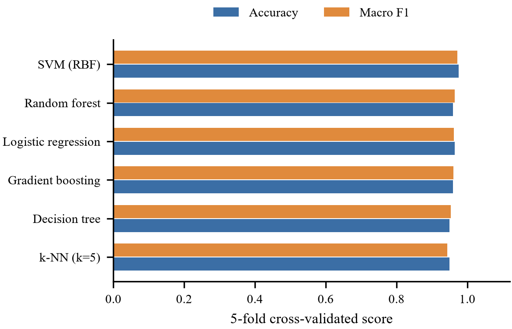
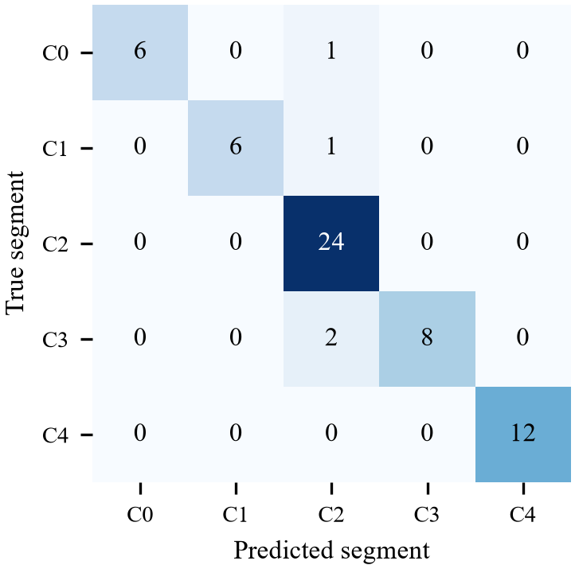
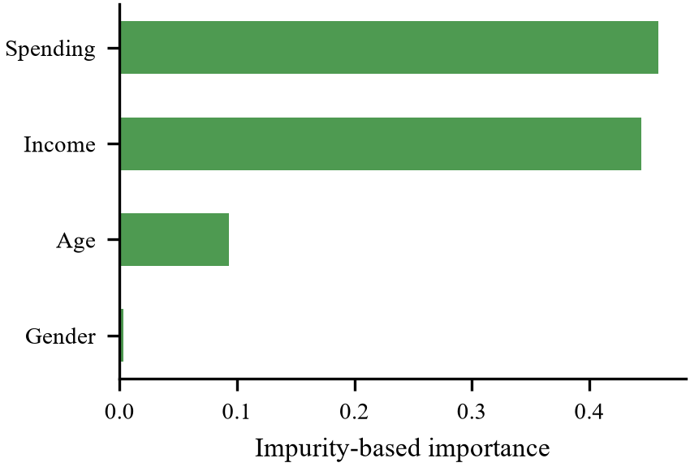
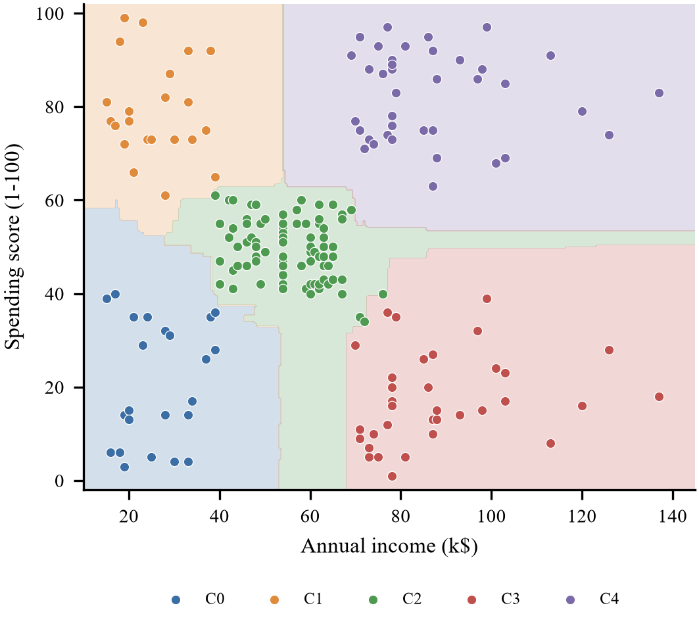
The value of a segmentation is not the partition but the differentiation of treatment it enables. The five groups suggest five distinct programmes. Target (19.5% of customers) should receive loyalty tiers, early access and premium services; the objective is retention, and the cost of losing one of these customers is high because both income and spend are high. Conservative (17.5%) is the group with the largest revenue upside: affluent but disengaged, they need a reason to spend — curated premium assortments, personal shopping, category-specific incentives rather than blanket discounts, which would only erode margin on customers who already have money.
Impulsive (11.0%) is small but young and highly responsive; campaigns aimed at trends, social media and instalment payment are more appropriate than discounting, since their constraint is liquidity rather than willingness to spend. Frugal (11.5%) is the price-sensitive group: value packs, coupons and essential categories. Standard (40.5%) is the volume base where small changes in visit frequency and basket size produce the largest absolute effect; the appropriate tools are cross-selling and category recommendations rather than acquisition spend.
Because the spending score is a proxy and not a monetary amount, we deliberately avoid converting segment sizes into revenue forecasts. A useful next step for the mall would be to replace the score with actual basket value and to track the segments over time, which turns a cross-sectional segmentation into a migration analysis: how many customers move from Conservative to Target after a campaign is a far better KPI than the size of any single cluster.
Four limitations deserve emphasis. Sample size. Two hundred records are enough to find a structure this pronounced, but not enough for stable inference about small segments: with 22 customers in Impulsive, the standard error of its mean spending is about 2.2 points, and the 5-fold cross-validation estimates in Table 5 fluctuate by up to three percentage points between folds. Feature poverty. Two informative variables are used, one of which (the spending score) is itself an aggregate of unknown construction. There is no time dimension, no transaction frequency, no product mix, so the classic RFM dimensions are unavailable and the segmentation is necessarily cross-sectional. Circularity of the classifier. As shown in Section 6.5, the high classification accuracy reflects the K-Means decision rule rather than predictive power over customer attributes; the demographic-only result (40%, at the majority baseline) is the honest measure. Normative choices. K = 5 is well supported, but it is a choice: the indices agree, yet K = 6 is only marginally worse on the silhouette and would split the central group. Any deployment should treat the segment count as a decision variable tied to how many campaigns the organisation can actually run.
There is also an ethical dimension. Segmenting customers by income risks excluding the Frugal group from attractive offers, and personalised treatment can shade into price discrimination. Since the segments are built on income and spending, the fair-use principle should be that segment membership informs service and assortment, not the price of an identical product.
Three extensions would strengthen the analysis. First, replacing the spending score with transactional RFM features and applying the same validation protocol, which would test whether five groups survive a richer representation. Second, a longitudinal design in which segments are recomputed quarterly, allowing cluster migration to be measured and the effect of campaigns to be estimated rather than assumed. Third, soft assignment: the Gaussian mixture in Table 3 already gives posterior probabilities, and these are more useful than hard labels for customers near a boundary, who are precisely the ones a targeted campaign is most likely to move.
We segmented 200 mall customers using exploratory analysis, K-Means clustering and a supervised assignment rule. Four internal indices agree on five clusters; the partition is stable under bootstrap resampling (ARI 0.979) and is reproduced by Ward clustering and a Gaussian mixture, while density-based clustering fails for a reason that is understood and instructive. The five segments — Frugal, Impulsive, Standard, Conservative and Target — are interpretable, sharply separated in the income–spending plane, and imply different marketing actions. An RBF support vector machine reproduces the segmentation with 97.5% cross-validated accuracy, but the demographic-only baseline shows that this accuracy is largely circular, a caveat we consider as important as the headline number. The pipeline is fully reproducible from the public repository.
All code and data are available at https://github.com/kaixinguaika/mall-customer-segmentation. The repository contains the raw CSV, three scripts (src/01_eda.py, src/02_clustering.py, src/03_classification.py), every figure and every numerical result reported above as CSV or JSON. The analysis was run with Python 3.13, scikit-learn 1.9.0, pandas 3.0.3 and matplotlib 3.11.0; all random seeds are fixed at 42, and the full pipeline executes in a few seconds on a laptop CPU.
Ben-Hur, A., Elisseeff, A., & Guyon, I. (2002). A stability based method for discovering structure in clustered data. Pacific Symposium on Biocomputing, 6–17.
Breiman, L. (2001). Random forests. Machine Learning, 45(1), 5–32.
Choudhary, V. (2019). Mall customer segmentation data. Kaggle. https://www.kaggle.com/datasets/vjchoudhary7/customer-segmentation-tutorial-in-python
Cortes, C., & Vapnik, V. (1995). Support-vector networks. Machine Learning, 20(3), 273–297.
Davies, D. L., & Bouldin, D. W. (1979). A cluster separation measure. IEEE Transactions on Pattern Analysis and Machine Intelligence, 1(2), 224–227.
Dolnicar, S. (2002). A review of unquestioned standards in using cluster analysis for data-driven market segmentation. Proceedings of the Australian and New Zealand Marketing Academy Conference.
Ester, M., Kriegel, H.-P., Sander, J., & Xu, X. (1996). A density-based algorithm for discovering clusters in large spatial databases with noise. Proceedings of KDD, 226–231.
Hartigan, J. A., & Wong, M. A. (1979). Algorithm AS 136: A K-means clustering algorithm. Journal of the Royal Statistical Society C, 28(1), 100–108.
Hubert, L., & Arabie, P. (1985). Comparing partitions. Journal of Classification, 2(1), 193–218.
Hughes, A. M. (1994). Strategic database marketing. Probus Publishing.
MacQueen, J. (1967). Some methods for classification and analysis of multivariate observations. Proceedings of the Fifth Berkeley Symposium on Mathematical Statistics and Probability, 281–297.
Pedregosa, F., et al. (2011). Scikit-learn: Machine learning in Python. Journal of Machine Learning Research, 12, 2825–2830.
Punj, G., & Stewart, D. W. (1983). Cluster analysis in marketing research: Review and suggestions for application. Journal of Marketing Research, 20(2), 134–148.
Rousseeuw, P. J. (1987). Silhouettes: A graphical aid to the interpretation and validation of cluster analysis. Journal of Computational and Applied Mathematics, 20, 53–65.
Ward, J. H. (1963). Hierarchical grouping to optimize an objective function. Journal of the American Statistical Association, 58(301), 236–244.
Wedel, M., & Kamakura, W. A. (2000). Market segmentation: Conceptual and methodological foundations (2nd ed.). Kluwer Academic Publishers.
The full configuration is reproduced below so that every number in this report can be regenerated. All estimators use scikit-learn defaults unless stated otherwise; the pipeline is deterministic given the seed.
| Component | Setting |
|---|---|
| Feature scaling | StandardScaler, fit on all 200 records |
| K-Means | K=5, n_init=100, max_iter=300, seed 42 |
| K search range | 2–10 for all indices, 1–10 for the elbow |
| Gaussian mixture | full covariance, n_init=10, seed 42 |
| Agglomerative | Ward linkage, Euclidean distance |
| DBSCAN | eps=0.47 (90th pct. of 5-NN distance), min_samples=5 |
| Bootstrap stability | 30 resamples, 200 draws with replacement, ARI |
| Classifiers | SVM: RBF, C=3, γ=scale; RF: 300 trees; tree: depth 4; k-NN: k=5; LR: max_iter=2000 |
| Validation | 5-fold stratified CV; hold-out 70/30 stratified, seed 42 |
| Segment | Income | Spending | Mean dist. |
|---|---|---|---|
| C0 Frugal | 26.30 | 20.91 | 14.2 |
| C1 Impulsive | 25.73 | 79.36 | 11.6 |
| C2 Standard | 55.30 | 49.52 | 10.1 |
| C3 Conservative | 88.20 | 17.11 | 16.3 |
| C4 Target | 86.54 | 82.13 | 16.3 |
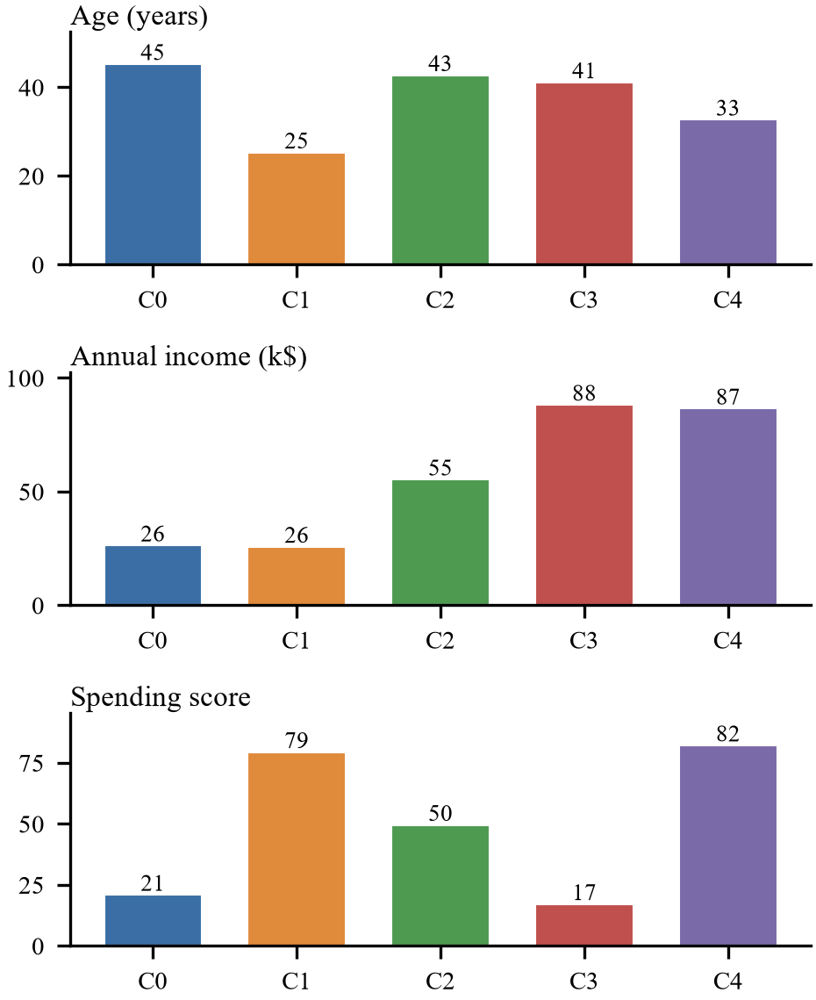